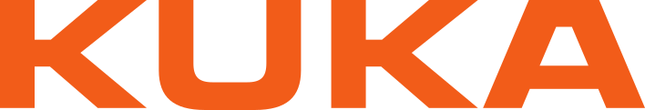
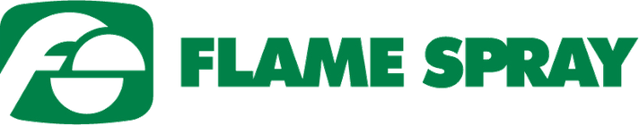

Pályázatok és fejlesztések
Az elmúlt évek európai uniós és hazai pályázatai a gépparkunkat és a mérési képességeinket fejlesztették — közvetlenül a mindennapi gyártásban hasznosulnak.
Akiknek gyártunk
Precíziós alkatrészek és gyártóeszközök — hazai és nemzetközi ipari partnereknek, a vasúttól a repüléstechnikáig.
 Siemens Zrt.
Siemens Zrt. Siemens Energy Kft.Knorr-Bremse Hungária Kft.
Siemens Energy Kft.Knorr-Bremse Hungária Kft.
Rolls-Royce
KUKA Hungária Kft.
AVL Hungary Kft. OBO Bettermann Hungary Kft.Schwarzmüller Kft.Harlo Kft.Oncotherm Kft.HUN-REN Magyar Kutatási Hálózat
OBO Bettermann Hungary Kft.Schwarzmüller Kft.Harlo Kft.Oncotherm Kft.HUN-REN Magyar Kutatási Hálózat
Flame Spray Hungary Kft.Gábos Kft.EXATON Kft.SMB Industries Kft.


Versenyképes Közép-Magyarország Operatív Program
WENZEL LH 87 3D koordináta-mérőgép. Méréstartomány X=800, Y=1500, Z=700 mm; CNC vezérlésű, modelltérben programozható. Pontosság a prémium szegmensben: E0, MPE = 0,0015 + L/350 mm, 0,0001 mm felbontású RENISHAW mérőlécekkel. A RENISHAW PH10M PLUS mérőfej „5” tengelyes mérésre alkalmas — a munkadarab egy felfogásból körbemérhető.
Pest megye Területfejlesztési Koncepciója 2014–2020
DMG MORI CTX Beta 1250 TC eszterga-maró-köszörű központ. Egy felfogásban mar, esztergál és köszörül — nő a pontosság és a termelékenység. Támogató: Pénzügyminisztérium.
Gazdaságfejlesztési és Innovációs Operatív Program
AVEMAX V-250-SP egyetemes marógép, PALMARY GU42x60S palástköszörű és ECO LASER 2600 lézerhegesztőgép. Feloldják a marási és köszörülési kapacitáskorlátot; a lézerhegesztő házon belüli szerszámjavítást tesz lehetővé.
Versenyképes Közép-Magyarország Operatív Program
EmR-1200D 3 tengelyes CNC megmunkálóközpont (1200 × 600 mm-ig) és EMCO FB-600MC univerzális CNC szerszámmarógép — szimultán 3 tengelyes marás.
Gazdaságfejlesztési és Innovációs Operatív Program
SODICK VZ300L huzalszikraforgácsoló — fejlett generátor és nagyfelbontású mérőlécek, kaliber- és idomszergyártás.
LEADER Program
TOS SN 32/1000 univerzális csúcseszterga, EX4060A startlyukfúró és Baoli CPQD15-M targonca; az arculat és a weboldal is megújult.
Precíziós gyártás, mérhető minőséggel
A fejlesztéseink eredménye a mindennapi gyártásban is ott van.